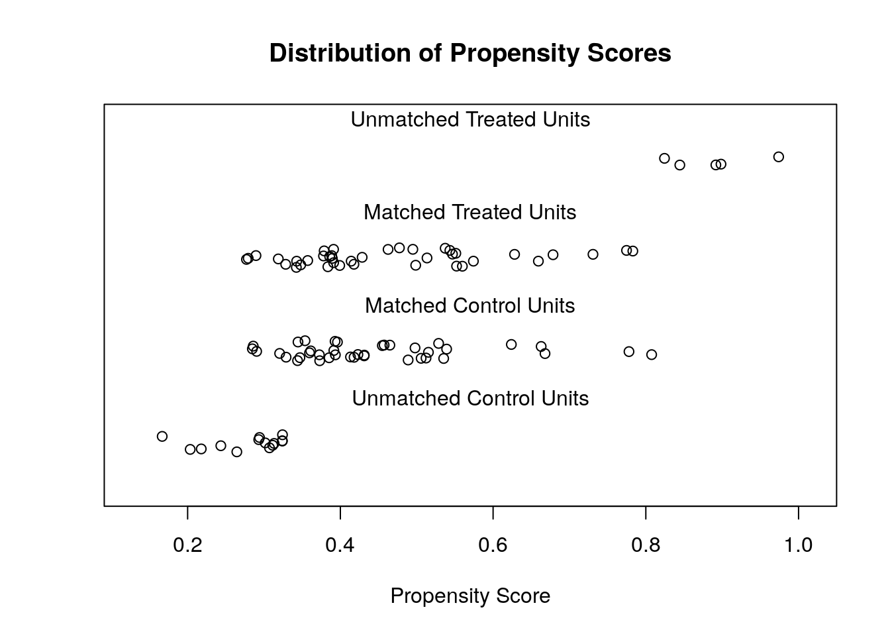
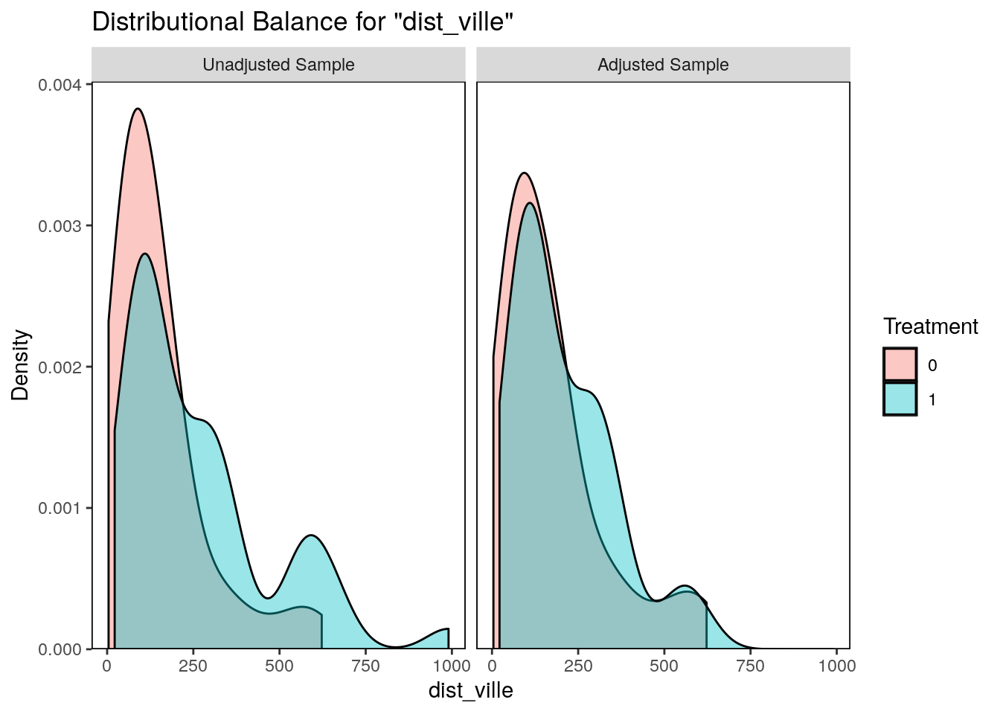

On a vu dans le chapitre précédent que les comparaisons simples réalisées entre les premières et les dernières aires à avoir été formellement protégées pose problème.
On va maintenant chercher à renforcer la comparabilité entre le groupe de traitement et le groupe de contrôle en réalisant un appariemment (cf. diapos de présentation).
On va commencer par réaliser quelques ajustements, car {MatchIt} requiert qu’aucune valeur des variables mobilisées ne soit manquante. On va donc retirer les observations comportant des NA.
Code
library(tidyverse) # Simplifie la manipulation de donnéeslibrary(lubridate) # Simplifie les opérations sur des dateslibrary(sf) # Pour traiter les données spatialeslibrary(MatchIt) # Pour réaliser les appariements.library(cobalt) # Pour les tests d'équilibre sur l'appariementlibrary(gt) # Pour faire de jolies tableslibrary(stargazer) # Pour présenter les résultats de régressionslibrary(mapme.biodiversity)library(htmltools)# Désactiver les notations scientifiquesoptions(scipen =999)# Charger les donnéesAP_Vahatra <-read_rds("data/AP_Vahatra_mapme.rds") %>%portfolio_wide() %>%mutate(Groupe =ifelse(year(date_creation) <2015, "Traitement", "Contrôle"))# Préparer les données sans valeurs manquantesVahatra_defor_noNA <- AP_Vahatra %>%mutate(surface_ha =as.numeric(st_area(AP_Vahatra)) /10000, couv_foret_2000 =`treecover_area_2000-01-01_treecover_ha`/ surface_ha *100,altitude =`elevation_2000-02-01_elevation_mean_m`,pente =`slope_2000-02-01_slope_mean_degrees`,dist_ville =`traveltime_2015-01-01_5k_110mio_traveltime_mean_minutes`,traitement =ifelse(year(date_creation) <2015, 1, 0),taux_deforestation_2000_2014 =-((`treecover_area_2014-01-01_treecover_ha`/`treecover_area_2000-01-01_treecover_ha`)^(1/14) -1) *100) %>%filter(!is.na(couv_foret_2000), !is.na(dist_ville), !is.na(altitude), !is.na(pente))summary(Vahatra_defor_noNA)Vahatra_defor_noNA %>%st_drop_geometry() %>%group_by(Groupe, traitement) %>%summarise(effectif =n())
Code
Vahatra_defor_noNA %>%st_drop_geometry() %>%group_by(Groupe) %>%summarize(`Nombre d'aires protégées`=n()) %>%gt() %>%tab_header("Observations par groupe avant appariemment") %>%tab_source_note("Source : Association Vahatra et données GFC")
Observations par groupe avant appariemment
Groupe
Nombre d'aires protégées
Contrôle
53
Traitement
44
Source : Association Vahatra et données GFC
8.2 Mesure de la propension
Pour commencer, nous allons spécifier le modèle probit qui estime dans quelle mesure la propension pour une aire d’avoir été protégée avant 2015 dépend de sa taille, de son taux de couverture forestière en 2000, de son altitude, de son caractère accidenté et de sa distance d’une ville d’au moins 5000 habitants.
Cette spécification peut se représenter selon l’équation suivante qui représente un modèle probit. Un modèle probit, tout comme le logit, est un modèle de choix binaire.
A matchit object
- method: 1:1 nearest neighbor matching without replacement
- distance: Propensity score [common support]
- estimated with logistic regression
- common support: units from both groups dropped
- number of obs.: 97 (original), 78 (matched)
- target estimand: ATT
- covariates: surface_ha, couv_foret_2000, altitude, pente, dist_ville
On peut maintenant observer les équilibres entre les groupes traités et contrôle avant et après l’appariement.
Code
summary(def_00_14_match)
Call:
matchit(formula = pscor, data = Vahatra_defor_noNA, method = "nearest",
distance = "glm", discard = "both", replace = FALSE, family = binomial(link = "probit"))
Summary of Balance for All Data:
Means Treated Means Control Std. Mean Diff. Var. Ratio
distance 0.5143 0.4032 0.5970 1.9343
surface_ha 65093.8897 66539.7728 -0.0184 0.5595
couv_foret_2000 71.9537 62.1290 0.3384 0.6778
altitude 589.4707 518.9928 0.1459 0.6982
pente 11.0161 9.5870 0.2145 1.0678
dist_ville 260.4379 147.0780 0.5255 2.4284
eCDF Mean eCDF Max
distance 0.1840 0.3049
surface_ha 0.0993 0.2517
couv_foret_2000 0.0915 0.2333
altitude 0.0943 0.2294
pente 0.0729 0.1758
dist_ville 0.1822 0.3263
Summary of Balance for Matched Data:
Means Treated Means Control Std. Mean Diff. Var. Ratio
distance 0.4666 0.4483 0.0983 1.1599
surface_ha 67525.2840 53400.1694 0.1799 0.9542
couv_foret_2000 70.1568 72.2206 -0.0711 0.8134
altitude 563.7866 449.9603 0.2356 0.9791
pente 10.6267 9.8470 0.1171 1.0674
dist_ville 204.5025 168.8781 0.1651 0.9053
eCDF Mean eCDF Max Std. Pair Dist.
distance 0.0404 0.1795 0.1149
surface_ha 0.1049 0.2564 1.0223
couv_foret_2000 0.0634 0.2051 0.8333
altitude 0.0843 0.2308 1.0357
pente 0.0550 0.1538 1.0324
dist_ville 0.0941 0.2308 0.3906
Sample Sizes:
Control Treated
All 53 44
Matched 39 39
Unmatched 9 0
Discarded 5 5
Exercice : Étudiez les tables ci-dessus. Quel effet a eu l’appariement sur l’équilibre des variables entre le groupe de traitement et le groupe de contrôle ? Combien d’observations ont été écartées ?
On peut observer la distance entre groupe de traitement et de contrôle.
Code
plot(def_00_14_match, type ="jitter", interactive =FALSE)

On peut également représenter l’équilibre entre les variables avant et après traitement avec les graphiques suivants.
Code
bal.plot(def_00_14_match, var.name ="dist_ville", which ="both")

Exercice : Quel effet a eu l’appariement sur la variable de distance à la ville ? Les autres variables d’appariement produisent-elles un effet aussi visible ?
8.4 Estimation du résultat en contrôlant pour les variables d’appariement
Le modèle qu’on utilise pour estimer l’impact est très proche de celui exposé ci-dessus, à la différence que la variable de traitement passe dans la partie droite, et qu’elle est remplacée par la déforestation.
Code
# Spécification du modèle pour l'impactestimp <- taux_deforestation_2000_2014 ~ traitement + surface_ha + couv_foret_2000 + altitude + pente + dist_ville
On va donc réaliser une régression, en tenant compte des pondérations générées par l’algorithme d’appariement (variable “weight”).
Code
# On extrait les données de l'appariementdef_00_14_match_data <-match.data(def_00_14_match)# Régression avec pondérationsdef_00_14_match_est <-lm(formula = estimp,data = def_00_14_match_data,weights = weights)# Présentation des résultatsmatch_out2 <-stargazer(def_00_14_match_est, type ="html")
Dependent variable:
taux_deforestation_2000_2014
traitement
-0.278*
(0.158)
surface_ha
0.00000***
(0.00000)
couv_foret_2000
-0.001
(0.003)
altitude
0.0001
(0.0002)
pente
-0.009
(0.017)
dist_ville
-0.001
(0.001)
Constant
0.795***
(0.228)
Observations
78
R2
0.156
Adjusted R2
0.084
Residual Std. Error
0.689 (df = 71)
F Statistic
2.184* (df = 6; 71)
Note:
*p<0.1; **p<0.05; ***p<0.01
8.5 Exercices
8.5.1 Exercice simple
Analysez, interprétez et critiquez les résultats ci-dessus.
8.5.2 Exercice intermédiaire
Ajoutez des variables d’intérêt et modifiez les paramètres de la fonction de matching.
8.5.3 Exercice avancé
Réalisez une analyse analogue avec les données de feux. Rédigez une analyse interprétative.
8.6 Application sur les données en mailles
L’exercice ci-dessous consiste à réaliser un appariement sur des données d’une taille relativement grande. Cet exercice comporte des limites, car on dispose d’un nombre limité d’observations à comparer.
Une approche plus appropriée consiste à utiliser le maillage du territoire effectué dans la section Chapter 7 pour comparer des parcelles d’aires passées sous protection pendant la période d’étude (2000-2023) à des zones d’ayant jamais été protégées.
Les données ne peuvent pas contenir de données manquantes sur les variables d’appariement, donc on les écarte.
Code
library(tidyverse)library(mapme.biodiversity)library(MatchIt)library(stargazer)library(sf)library(cobalt)library(tmap)library(htmltools) # Pour avoir de plus jolies tableslibrary(geodata) # Pour les frontières de Madagascar# Taille des titres des cartestaille_titres_cartes =1grille_mada_summary_AP <-read_rds("data/grille_mada_summary_AP.rds")# On référence le nom des variables qui vont servir à l'analysevariables_analyse <-c("assetid","traitement","couv_foret_2000","pop_km2","altitude","pente","dist_ville","taux_deforestation_2000_2023")# On renomme le ficher 'df' (dataframe) : plus concis dans les commandes ensuitedf <- grille_mada_summary_AP %>%# On supprime toutes les lignes pour lesquelles au moins 1 valeur variable # est manquante parmi les variables d'analysemutate(traitement = position_ap =="Intérieur") %>%drop_na(any_of(variables_analyse))
On analyse maintenant le score de propension.
Code
# Get propensity scoresglm_out <-glm(traitement ~ couv_foret_2000 + pop_km2 + altitude + pente + dist_ville, family =binomial(link ="probit"),data = df)cellmatch_out1 <-stargazer(glm_out,summary =TRUE,type ="html",title ="Score de propension")
Score de propension
Dependent variable:
traitement
couv_foret_2000
0.013***
(0.0002)
pop_km2
-0.021***
(0.001)
altitude
0.001***
(0.00002)
pente
-0.041***
(0.002)
dist_ville
0.0004***
(0.00004)
Constant
-1.574***
(0.017)
Observations
58,514
Log Likelihood
-18,220.730
Akaike Inf. Crit.
36,453.460
Note:
*p<0.1; **p<0.05; ***p<0.01
Exercice : interpréter le résultat du score de propension.
Code
m_out <-matchit(traitement ~ couv_foret_2000 + pop_km2 + altitude + pente + dist_ville,data = df,method ="nearest",replace =TRUE,distance ="glm", discard ="both", # common support: drop units from both groups link ="probit")print(m_out)
A matchit object
- method: 1:1 nearest neighbor matching with replacement
- distance: Propensity score [common support]
- estimated with probit regression
- common support: units from both groups dropped
- number of obs.: 58514 (original), 12670 (matched)
- target estimand: ATT
- covariates: couv_foret_2000, pop_km2, altitude, pente, dist_ville
Code
# print(summary(m_out, un = FALSE))bal_table <-bal.tab(m_out, un =TRUE)print(bal_table)